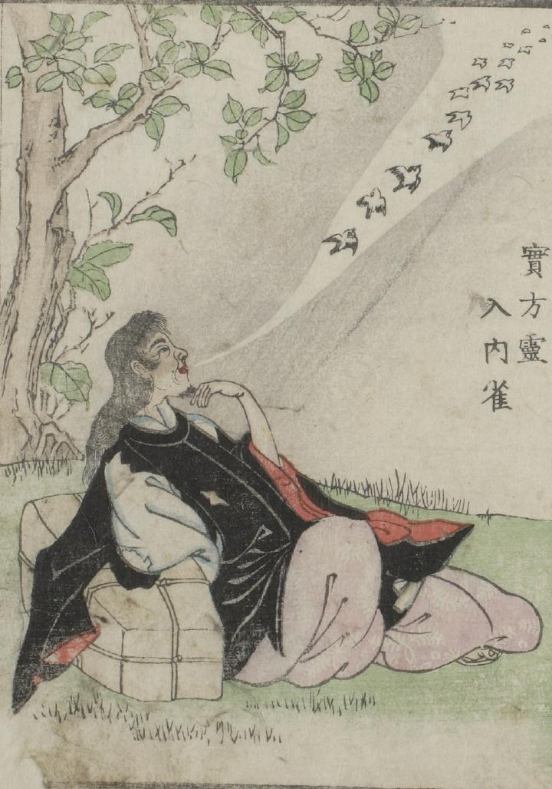

藤原実方；フジワラサネカタ，霊；レイ，雀；スズメ

破れ傷んだ束帯姿の藤原実方が葛篭にもたれ座っている。彼の口からは、多くの雀たちが飛び立っている。
出典：親書誌：U426_nichibunken_0051：怪物画本；カイブツエホン／日付：2006／資源識別子：U426_nichibunken_0051_0003_0000
Copyright (c)2010- International Research Center for Japanese Studies, Kyoto, Japan. All rights reserved.